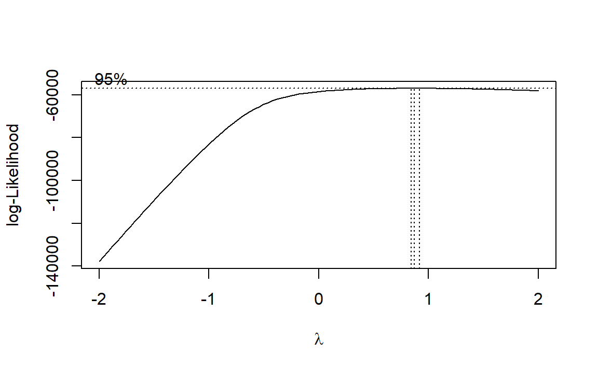

Task description
We developed a novel paradigm to examine ERP responses to novel and repeated emotional faces. In particular, EEG was recorded while preschoolers observed pairs of faces presented sequentially. In some trials, the two sequential facial stimuli (hereafter: ‘Face 1’ and ‘Face 2’) were identical, while in other trials they differed with regards to the emotional expression displayed (happy, fearful or neutral).
We calculated linear mixed models (LMM) separately for each ERP component. Fixed effects are defined for each model individually. Chronological age and working memory were entered as scaled covariates in all linear mixed model analyses to control for cognitive abilities of the children as well as potential age differences.
The random effects structure included random intercepts for participants (1|ID) and stimulus (1|Stim_Type). For each model, we commenced with the maximal random effect structure. Random intercepts were defined for participants and stimuli. Random slopes were defined for all predictors, but not covariates. We set correlations of random terms to zero and performed a principal component analysis on the random-effects variance-covariance estimates to determine the number of components supported by the data. We removed random effects explaining zero variance, in order to prevent over-parametrization. Afterwards, we checked whether all random intercepts improved the model using likelihood-ratio-testing.
Valence effects
We predicted that ERP amplitudes of sensory (P1, N170) and higher-order (P3) components would be larger for emotional compared to neutral facial expressions. We examined this hypothesis in response to Face 1.
Descriptive statistics
## P1/P3 trajectories
# Load data
Face1_data = read.csv("./data/ROI_P1_P3_Face1.csv", header = TRUE)
# De-select participants
Face1_data = Face1_data[with(Face1_data, !(Face1_data$ID == "05")), ]
# Select time window
Face1_data = Face1_data[(Face1_data$Time >= -200) & (Face1_data$Time <= 600), ]
# Rename conditions
Face1_data$Condition[Face1_data$Condition == 1] = "happy"
Face1_data$Condition[Face1_data$Condition == 2] = "neutral"
Face1_data$Condition[Face1_data$Condition == 3] = "angry"
# Select conditions of interest
Face1_data_all_emo_sep = Face1_data[(Face1_data$Condition == "happy") | (Face1_data$Condition ==
"angry") | (Face1_data$Condition == "neutral"), ]
# Factor and level emotion
Face1_data_all_emo_sep$Condition = factor(Face1_data_all_emo_sep$Condition, levels = c("neutral",
"happy", "angry"))
# Plot data
P1_P3_val_traj = ggplot(Face1_data_all_emo_sep, aes(Time, ROI_Average)) + theme(panel.background = element_blank(),
panel.border = element_rect(colour = "grey", fill = NA, size = 2), axis.title.y = element_text(size = 11,
margin = margin(t = 0, r = 10, b = 0, l = 0)), axis.title.x = element_text(size = 11,
margin = margin(t = -5, r = 10, b = 0, l = 0)), legend.text = element_text(size = 7),
legend.key = element_rect(fill = "white"), text = element_text(size = 10)) +
stat_summary(fun.y = mean, geom = "line", size = 0.6, linetype = "solid", aes(colour = Condition)) +
scale_color_discrete(guide = guide_legend(override.aes = list(color = "white"))) +
scale_colour_manual(values = emotion_col) + labs(x = "\nTime [ms]", y = expression(paste("Mean ROI amplitude [",
mu, "V]")), colour = "") + theme(legend.position = "none") + coord_cartesian(ylim = c(-2,
16), xlim = c(-100, 600)) + scale_y_continuous(breaks = seq(-2, 16, 4)) + scale_x_continuous(breaks = seq(-100,
600, 200)) + geom_vline(xintercept = 0, linetype = "dashed", colour = "grey") +
geom_hline(yintercept = 0, linetype = "dashed", colour = "grey") + geom_text(x = 110,
y = 14, label = "P1", color = "black", size = 2) + geom_text(x = 350, y = 14,
label = "P3", color = "black", size = 2)
## N170 trajectories
# Load data
Face1_data_l = read.csv("./data/left_ROI_N170_Face1.csv", header = TRUE)
Face1_data_r = read.csv("./data/right_ROI_N170_Face1.csv", header = TRUE)
# Select time windows
Face1_data_l = Face1_data_l[(Face1_data_l$Time >= -200) & (Face1_data_l$Time <= 600),
]
Face1_data_r = Face1_data_r[(Face1_data_r$Time >= -200) & (Face1_data_r$Time <= 600),
]
# De-select participants
Face1_data_l = Face1_data_l[with(Face1_data_l, !(Face1_data_l$ID == "05")), ]
Face1_data_r = Face1_data_r[with(Face1_data_r, !(Face1_data_r$ID == "05")), ]
# Rename conditions
Face1_data_l$Condition[Face1_data_l$Condition == 1] = "happy"
Face1_data_l$Condition[Face1_data_l$Condition == 2] = "neutral"
Face1_data_l$Condition[Face1_data_l$Condition == 3] = "angry"
Face1_data_r$Condition[Face1_data_r$Condition == 1] = "happy"
Face1_data_r$Condition[Face1_data_r$Condition == 2] = "neutral"
Face1_data_r$Condition[Face1_data_r$Condition == 3] = "angry"
# Select conditions of interest
Face1_data_all_emo_sep_l = Face1_data_l[(Face1_data_l$Condition == "happy") | (Face1_data_l$Condition ==
"angry") | (Face1_data_l$Condition == "neutral"), ]
Face1_data_all_emo_sep_r = Face1_data_r[(Face1_data_r$Condition == "happy") | (Face1_data_r$Condition ==
"angry") | (Face1_data_r$Condition == "neutral"), ]
# Factor and level emotion
Face1_data_all_emo_sep_l$Condition = factor(Face1_data_all_emo_sep_l$Condition, levels = c("neutral",
"happy", "angry"))
Face1_data_all_emo_sep_r$Condition = factor(Face1_data_all_emo_sep_r$Condition, levels = c("neutral",
"happy", "angry"))
# Average N170 trajectories for left and right hemisphere
Face1_N170 = (Face1_data_all_emo_sep_l + Face1_data_all_emo_sep_r)/2
Face1_N170$Condition = Face1_data_all_emo_sep_l$Condition
# Plot N170 trajectory
N170_val_traj = ggplot(Face1_N170, aes(Time, ROI_Average)) + theme(panel.background = element_blank(),
panel.border = element_rect(colour = "grey", fill = NA, size = 2), axis.title.y = element_text(size = 11,
margin = margin(t = 0, r = 20, b = 0, l = 0)), axis.title.x = element_text(size = 11,
margin = margin(t = -5, r = 10, b = 0, l = 0)), legend.text = element_text(size = 7),
legend.key = element_rect(fill = "white"), text = element_text(size = 10)) +
stat_summary(fun.y = mean, geom = "line", size = 0.6, linetype = "solid", aes(colour = Condition)) +
scale_colour_manual(values = emotion_col) + theme(legend.position = "none") +
labs(x = "\nTime [ms]", y = expression(paste("")), colour = "") + coord_cartesian(ylim = c(-6,
6), xlim = c(-100, 600)) + scale_y_continuous(breaks = seq(-6, 6, 4)) + scale_x_continuous(breaks = seq(-100,
600, 200)) + geom_vline(xintercept = 0, linetype = "dashed", colour = "grey") +
geom_hline(yintercept = 0, linetype = "dashed", colour = "grey") + geom_text(x = 200,
y = -5.2, label = "N170", color = "black", size = 2)
# Load topography information
Topo_Emo = read.csv(file = "./data/ERPs_Topo_Face1.csv", header = TRUE, sep = ",")
# Exclude participant
Topo_Emo = Topo_Emo[with(Topo_Emo, !(Topo_Emo$ID == 5)), ]
# Re-name to fit topoplot function
names(Topo_Emo)[names(Topo_Emo) == "Time"] = "time"
# Change from wide to long format for electrodes
Topo_Emo = gather(Topo_Emo, electrode, amplitude, Fp1:Oz, factor_key = TRUE)
# Rename A1/A2
names(Topo_Emo)[names(Topo_Emo) == "A1"] <- "TP9"
names(Topo_Emo)[names(Topo_Emo) == "A2"] <- "TP10"
# Plot topoplots for happy
Topo_Emo_Hap = subset(Topo_Emo, Condition == 1)
# Plot topoplots for neutral
Topo_Emo_Neu = subset(Topo_Emo, Condition == 2)
# Plot topoplots for angry
Topo_Emo_Ang = subset(Topo_Emo, Condition == 3)
# Calculate difference score angry-neutral
Topo_Diff_Ang_Neu = data.frame(ID = Topo_Emo_Hap[, 1], time = Topo_Emo_Hap[, 3],
electrode = Topo_Emo_Hap[, 4], amplitude = Topo_Emo_Ang$amplitude - Topo_Emo_Neu$amplitude)
# Calculate difference score happy-neutral
Topo_Diff_Hap_Neu = data.frame(ID = Topo_Emo_Hap[, 1], time = Topo_Emo_Hap[, 3],
electrode = Topo_Emo_Hap[, 4], amplitude = Topo_Emo_Hap$amplitude - Topo_Emo_Neu$amplitude)
## P1s
# Select time windows
Topo_Diff_Ang_Neu_P1 = subset(Topo_Diff_Ang_Neu, time >= 80 & time <= 120)
Topo_Diff_Hap_Neu_P1 = subset(Topo_Diff_Hap_Neu, time >= 80 & time <= 120)
# Add electrode information
Topo_Diff_Ang_Neu_P1 = electrode_locations(Topo_Diff_Ang_Neu_P1, electrode = "electrode",
drop = FALSE, montage = NULL)
Topo_Diff_Hap_Neu_P1 = electrode_locations(Topo_Diff_Hap_Neu_P1, electrode = "electrode",
drop = FALSE, montage = NULL)
# Draw topographies
topo_diff_ang_neu_P1 = ggplot(Topo_Diff_Ang_Neu_P1, aes(x = x, y = y, fill = amplitude,
label = electrode)) + ggtitle("P1 (80-120 ms)") + geom_topo(grid_res = 300, interp_limit = "head",
chan_markers = "point", chan_size = 0.5, head_size = 0.9) + scale_fill_distiller(palette = "RdBu",
limits = c(-2, 2)) + theme_void() + coord_equal() + labs(fill = expression(paste("Amplitude (",
mu, "V)"))) + theme(legend.position = "none", plot.title = element_text(size = 8,
face = "bold", vjust = 6))
# Draw topographies
topo_diff_hap_neu_P1 = ggplot(Topo_Diff_Hap_Neu_P1, aes(x = x, y = y, fill = amplitude,
label = electrode)) + ggtitle("") + geom_topo(grid_res = 300, interp_limit = "head",
chan_markers = "point", chan_size = 0.5, head_size = 0.9) + scale_fill_distiller(palette = "RdBu",
limits = c(-2, 2)) + theme_void() + coord_equal() + labs(fill = expression(paste("Amplitude (",
mu, "V)"))) + theme(legend.position = "none", plot.title = element_text(size = 8,
face = "bold"))
## N170s
# Select time windows
Topo_Diff_Ang_Neu_N170 = subset(Topo_Diff_Ang_Neu, time >= 170 & time <= 230)
Topo_Diff_Hap_Neu_N170 = subset(Topo_Diff_Hap_Neu, time >= 170 & time <= 230)
# Add electrode information
Topo_Diff_Ang_Neu_N170 = electrode_locations(Topo_Diff_Ang_Neu_N170, electrode = "electrode",
drop = FALSE, montage = NULL)
Topo_Diff_Hap_Neu_N170 = electrode_locations(Topo_Diff_Hap_Neu_N170, electrode = "electrode",
drop = FALSE, montage = NULL)
# Draw topographies
topo_diff_ang_neu_N170 = ggplot(Topo_Diff_Ang_Neu_N170, aes(x = x, y = y, fill = amplitude,
label = electrode)) + ggtitle("N170 (180-220 ms)") + geom_topo(grid_res = 300,
interp_limit = "head", chan_markers = "point", chan_size = 0.5, head_size = 0.9) +
scale_fill_distiller(palette = "RdBu", limits = c(-3, 3)) + theme_void() + coord_equal() +
labs(fill = expression(paste("Amplitude (", mu, "V)"))) + theme(legend.position = "none",
plot.title = element_text(size = 8, face = "bold", vjust = 6))
# Draw topographies
topo_diff_hap_neu_N170 = ggplot(Topo_Diff_Hap_Neu_N170, aes(x = x, y = y, fill = amplitude,
label = electrode)) + ggtitle("") + geom_topo(grid_res = 300, interp_limit = "head",
chan_markers = "point", chan_size = 0.5, head_size = 0.9) + scale_fill_distiller(palette = "RdBu",
limits = c(-3, 3)) + theme_void() + coord_equal() + labs(fill = expression(paste("Amplitude (",
mu, "V)"))) + theme(legend.position = "none", plot.title = element_text(size = 8,
face = "bold"))
## P3s
# Select time windows
Topo_Diff_Ang_Neu_P3 = subset(Topo_Diff_Ang_Neu, time >= 300 & time <= 600)
Topo_Diff_Hap_Neu_P3 = subset(Topo_Diff_Hap_Neu, time >= 300 & time <= 600)
# Add electrode information
Topo_Diff_Ang_Neu_P3 = electrode_locations(Topo_Diff_Ang_Neu_P3, electrode = "electrode",
drop = FALSE, montage = NULL)
Topo_Diff_Hap_Neu_P3 = electrode_locations(Topo_Diff_Hap_Neu_P3, electrode = "electrode",
drop = FALSE, montage = NULL)
# Draw topographies
topo_diff_ang_neu_P3 = ggplot(Topo_Diff_Ang_Neu_P3, aes(x = x, y = y, fill = amplitude,
label = electrode)) + ggtitle("P3 (300-500 ms)") + geom_topo(grid_res = 300,
interp_limit = "head", chan_markers = "point", chan_size = 0.5, head_size = 0.9) +
scale_fill_distiller(palette = "RdBu", limits = c(-3, 4)) + theme_void() + coord_equal() +
labs(fill = expression(paste("Amplitude (", mu, "V)"))) + theme(legend.position = "none",
plot.title = element_text(size = 8, face = "bold", vjust = 6))
# Draw topographies
topo_diff_hap_neu_P3 = ggplot(Topo_Diff_Hap_Neu_P1, aes(x = x, y = y, fill = amplitude,
label = electrode)) + ggtitle("") + geom_topo(grid_res = 300, interp_limit = "head",
chan_markers = "point", chan_size = 0.5, head_size = 0.9) + scale_fill_distiller(palette = "RdBu",
limits = c(-3, 4)) + theme_void() + coord_equal() + labs(fill = expression(paste("Amplitude (",
mu, "V)"))) + theme(legend.position = "none", plot.title = element_text(size = 8,
face = "bold"))
# Get legend for trajectories
traj_emo = ggplot(Face1_N170, aes(Time, ROI_Average)) + theme(panel.background = element_blank(),
panel.border = element_rect(colour = "grey", fill = NA, size = 2), axis.title.y = element_text(margin = margin(t = 0,
r = 20, b = 0, l = 0)), axis.title.x = element_text(margin = margin(t = -5,
r = 10, b = 0, l = 0)), legend.text = element_text(size = 10), legend.key = element_rect(fill = "white")) +
stat_summary(fun.y = mean, geom = "line", size = 1, linetype = "solid", aes(colour = Condition)) +
scale_colour_manual(values = emotion_col) + theme(legend.position = "right") +
labs(x = "\ntime (ms)", y = expression(paste("")), colour = "") + coord_cartesian(ylim = c(-6,
6), xlim = c(-100, 600)) + scale_y_continuous(breaks = seq(-6, 6, 2)) + scale_x_continuous(breaks = seq(-100,
600, 100)) + geom_vline(xintercept = 0, linetype = "dashed", colour = "grey") +
geom_hline(yintercept = 0, linetype = "dashed", colour = "grey")
traj_leg_emo = get_legend(traj_emo)
# Get legend for topos
topo_leg_P1 = ggplot(Topo_Diff_Ang_Neu_P1, aes(x = x, y = y, fill = amplitude, label = electrode)) +
ggtitle("Angry-Neutral") + geom_topo(grid_res = 300, interp_limit = "head", chan_markers = "point",
chan_size = 2, head_size = 0.9) + scale_fill_distiller(palette = "RdBu", limits = c(-2,
2)) + theme_void() + coord_equal() + labs(fill = expression(paste(" ", mu, "V"))) +
theme(legend.position = "right", legend.text.align = 1)
topo_leg_P1 = get_legend(topo_leg_P1)
topo_leg_N170 = ggplot(Topo_Diff_Ang_Neu_N170, aes(x = x, y = y, fill = amplitude,
label = electrode)) + ggtitle("Angry-Neutral") + geom_topo(grid_res = 300, interp_limit = "head",
chan_markers = "point", chan_size = 2, head_size = 0.9) + scale_fill_distiller(palette = "RdBu",
limits = c(-3, 3)) + theme_void() + coord_equal() + labs(fill = expression(paste(" ",
mu, "V"))) + theme(legend.position = "right", legend.text.align = 1)
topo_leg_N170 = get_legend(topo_leg_N170)
topo_leg_P3 = ggplot(Topo_Diff_Ang_Neu_P3, aes(x = x, y = y, fill = amplitude, label = electrode)) +
ggtitle("Angry-Neutral") + geom_topo(grid_res = 300, interp_limit = "head", chan_markers = "point",
chan_size = 2, head_size = 0.9) + scale_fill_distiller(palette = "RdBu", limits = c(-3,
4)) + theme_void() + coord_equal() + labs(fill = expression(paste(" ", mu, "V"))) +
theme(legend.position = "right", legend.text.align = 1)
topo_leg_P3 = get_legend(topo_leg_P3)
# Get difference labels
text = paste("\n Angry-\n", "Neutral\n")
ang_neu_text = ggplot() + annotate("text", x = 4, y = 25, size = 4, label = text) +
theme_minimal() + theme(panel.grid.major = element_blank(), panel.grid.minor = element_blank(),
axis.line = element_line(color = "white", size = 1, linetype = "solid"), axis.text.x = element_blank(),
axis.text.y = element_blank(), axis.title.y = element_blank(), axis.title.x = element_blank(),
panel.background = element_rect(colour = "white", size = 0.5), axis.ticks = element_blank())
text = paste("\n Happy-\n", "Neutral\n")
hap_neu_text = ggplot() + annotate("text", x = 4, y = 25, size = 4, label = text) +
theme_minimal() + theme(panel.grid.major = element_blank(), panel.grid.minor = element_blank(),
axis.line = element_line(color = "white", size = 1, linetype = "solid"), axis.text.x = element_blank(),
axis.text.y = element_blank(), axis.title.y = element_blank(), axis.title.x = element_blank(),
panel.background = element_rect(colour = "white", size = 0.5), axis.ticks = element_blank())
# Explanation: draw_plot(plot, for position: x = 0, y = 0, width = 1, height = 1)
ggdraw(xlim = c(0, 1.2), ylim = c(0, 1.4)) + draw_plot(P1_P3_val_traj, 0.05, 0.7,
0.5, 0.6) + draw_plot(N170_val_traj, 0.55, 0.7, 0.5, 0.6) + draw_plot(traj_leg_emo,
1, 1, 0.25, 0.25) + draw_plot(ang_neu_text, -0.05, 0.25, 0.3, 0.3) + draw_plot(hap_neu_text,
-0.05, -0.05, 0.3, 0.3) + draw_plot(topo_diff_ang_neu_P1, 0.12, 0.3, 0.3, 0.3) +
draw_plot(topo_diff_hap_neu_P1, 0.12, 0, 0.3, 0.3) + draw_plot(topo_leg_P1, 0.37,
0.25, 0.14, 0.14) + draw_plot(topo_diff_ang_neu_N170, 0.47, 0.3, 0.3, 0.3) +
draw_plot(topo_diff_hap_neu_N170, 0.47, 0, 0.3, 0.3) + draw_plot(topo_leg_N170,
0.72, 0.25, 0.14, 0.14) + draw_plot(topo_diff_ang_neu_P3, 0.82, 0.3, 0.3, 0.3) +
draw_plot(topo_diff_hap_neu_P3, 0.82, 0, 0.3, 0.3) + draw_plot(topo_leg_P3, 1.07,
0.25, 0.14, 0.14)
Model specification
LMM_P1: Random effect structure
# Select Face 1
P1_Val = subset(ERP_data, Group_pt == 1)
# Prepare fixed factors
P1_Val$ID = as.factor(P1_Val$ID)
P1_Val$Stim_Type = as.factor(P1_Val$Stim_Type)
# Re-code emotion condition
P1_Val$Condition[P1_Val$Condition == 1] = "happy"
P1_Val$Condition[P1_Val$Condition == 2] = "neutral"
P1_Val$Condition[P1_Val$Condition == 3] = "angry"
# Create factor & set neutral as baseline
P1_Val$Condition = factor(P1_Val$Condition, levels = c("neutral", "happy", "angry"))
# Add contrast columns
mm_P1_Val = model.matrix(~Condition, P1_Val)
# Attach to dataframe
P1_Val[, (ncol(P1_Val) + 1):(ncol(P1_Val) + 3)] = mm_P1_Val
names(P1_Val)[(ncol(P1_Val) - 2):ncol(P1_Val)] = c("Mean", "Hap_Neu", "Ang_Neu")
# Build model
mod_P1_val.lmer1 = lmer(mean_ROI_P1 ~ Hap_Neu + Ang_Neu + scale(Age) + scale(WM) +
(1 + Hap_Neu + Ang_Neu || ID) + (1 + Hap_Neu + Ang_Neu || Stim_Type), data = P1_Val,
control = lmerControl(calc.derivs = FALSE))
# 1st: check how many zero variance terms you got in random effects
summary(rePCA(mod_P1_val.lmer1))
# 2nd: check which random terms explain the least variance
print(VarCorr(mod_P1_val.lmer1), comp = "Variance")
# Remove intercepts/slopes based on variance check
mod_P1_val.lmer2 = lmer(mean_ROI_P1 ~ Hap_Neu + Ang_Neu + scale(Age) + scale(WM) +
(1 + Ang_Neu || ID) + (0 + Hap_Neu + Ang_Neu || Stim_Type), data = P1_Val, control = lmerControl(calc.derivs = FALSE))
# Re-check the model
summary(rePCA(mod_P1_val.lmer2))
print(VarCorr(mod_P1_val.lmer2), comp = "Variance")
# Likelihood ratio testing
# For ID
mod_P1_val.lmer3 = lmer(mean_ROI_P1 ~ Hap_Neu + Ang_Neu + scale(Age) + scale(WM) +
(1 | ID) + (0 + Hap_Neu + Ang_Neu || Stim_Type), data = P1_Val, control = lmerControl(calc.derivs = FALSE))
# Calculate ANOVA
anova(mod_P1_val.lmer2, mod_P1_val.lmer3)
# Stimulus type
mod_P1_val.lmer4 = lmer(mean_ROI_P1 ~ Hap_Neu + Ang_Neu + scale(Age) + scale(WM) +
(1 + Ang_Neu || ID) + (0 | Stim_Type), data = P1_Val, control = lmerControl(calc.derivs = FALSE))
# Calculate ANOVA
anova(mod_P1_val.lmer2, mod_P1_val.lmer4)
# Final model
mod_P1_val.lmer4 = lmer(mean_ROI_P1 ~ Hap_Neu + Ang_Neu + scale(Age) + scale(WM) +
(1 | ID), data = P1_Val, control = lmerControl(calc.derivs = FALSE))According to our hypothesis, the main fixed effects of interest was emotion of Face 1. We applied a treatment contrast comparing neutral vs happy and neutral vs angry emotional facial expressions (Neutral vs Happy, Neutral vs Angry). The final model was comprised of:
mean_ROI_P1 ~ Hap_Neu + Ang_Neu + scale(Age) + scale(WM) + (1 | , ID)
LMM_P1: Normality of residuals
# Set treatment contrast
contrasts(P1_Val$Condition) = contr.treatment(3)
## Check properties of DV / residuals
P1_Val$Trans_P1 = P1_Val$mean_ROI_P1 + 1 - min(P1_Val$mean_ROI_P1)
# To make sure residuals follow ND: Calculate box-cox plot
boxcox(P1_Val$Trans_P1 ~ P1_Val$Condition)
P1 amplitudes met the assumption of normally distributed residuals.
# Visualize normality assumption of residuals (without log transform)
mod_P1_val = lm(Trans_P1 ~ Condition, data = P1_Val)
res.mod_P1_val = residuals(mod_P1_val)
par(mfrow = c(1, 2))
qqpl_mod_P1_val = qqPlot(res.mod_P1_val, main = "QQplot before transformation")
norm_mod_P1_val = plot(density(res.mod_P1_val), main = "Density plot before transformation")
par(mfrow = c(1, 1))LMM_P1: Homoscedasticity
# Check homoscedasticity
plot(fitted(mod_P1_val.lmer4), residuals(mod_P1_val.lmer4))
abline(0, 0)
Based on visual inspection, we assumed homoscedasticity.
LMM_N170: Random effect structure
# Transform dataset so that left/right hemisphere are accounted for
N170_Val = gather(ERP_data, Elect_site, N170_Amplitude, mean_ROI_N170l:mean_ROI_N170r,
factor_key = TRUE)
# Add variable name
N170_Val$Elect_site = as.character(N170_Val$Elect_site)
N170_Val$Elect_site[N170_Val$Elect_site == "mean_ROI_N170l"] = "left"
N170_Val$Elect_site[N170_Val$Elect_site == "mean_ROI_N170r"] = "right"
# Prepare fixed factors
N170_Val$ID = as.factor(N170_Val$ID)
N170_Val$Stim_Type = as.factor(N170_Val$Stim_Type)
N170_Val$Elect_site = factor(N170_Val$Elect_site)
# Select primes
N170_Val = subset(N170_Val, Group_pt == 1)
# Re-code values for emotion variable
N170_Val$Condition[N170_Val$Condition == 1] = "happy"
N170_Val$Condition[N170_Val$Condition == 2] = "neutral"
N170_Val$Condition[N170_Val$Condition == 3] = "angry"
# Create factor, get neutral as baseline
N170_Val$Condition = factor(N170_Val$Condition, levels = c("neutral", "happy", "angry"))
# Set treatment contrast
contrasts(N170_Val$Condition) = contr.treatment(3)
# Set contrast for hemisphere
contrasts(N170_Val$Elect_site) = contr.sum(2)/2
# Add contrast columns
mm_N170_Val = model.matrix(~Condition + Elect_site + Condition * Elect_site, N170_Val)
# Attach to dataframe
N170_Val[, (ncol(N170_Val) + 1):(ncol(N170_Val) + 6)] = mm_N170_Val
names(N170_Val)[(ncol(N170_Val) - 5):ncol(N170_Val)] = c("Mean", "Hap_Neu", "Ang_Neu",
"Elect_site", "Hap_NeuxElect_site", "Ang_NeuxElect_site")
# Get model
mod_N170_val.lmer1 = lmer(N170_Amplitude ~ Hap_Neu + Ang_Neu + Hap_NeuxElect_site +
Ang_NeuxElect_site + scale(Age) + scale(WM) + (1 + Hap_Neu + Ang_Neu + Hap_NeuxElect_site +
Ang_NeuxElect_site + Elect_site || ID) + (1 + Hap_Neu + Ang_Neu + Hap_NeuxElect_site +
Ang_NeuxElect_site + Elect_site || Stim_Type), data = N170_Val, control = lmerControl(calc.derivs = FALSE))
# 1st: check how many zero variance terms you got in random effects
summary(rePCA(mod_N170_val.lmer1))
# 2nd: check which random terms explain the least variance
print(VarCorr(mod_N170_val.lmer1), comp = "Variance")
# Improved model
mod_N170_val.lmer2 = lmer(N170_Amplitude ~ Hap_Neu + Ang_Neu + Hap_NeuxElect_site +
Ang_NeuxElect_site + scale(Age) + scale(WM) + (1 | ID), data = N170_Val, control = lmerControl(calc.derivs = FALSE))
# Re-check the model
summary(rePCA(mod_N170_val.lmer2))
print(VarCorr(mod_N170_val.lmer2), comp = "Variance")According to our hypothesis, the main fixed effects of interest was emotion of Face 1. We applied a treatment contrast comparing neutral vs happy and neutral vs angry emotional facial expressions (Neutral vs Happy, Neutral vs Angry). For the N170, we also included a scaled sum contrast for hemisphere (Elect_site) as well as an interaction of emotional facial expressions with hemisphere. The final model was comprised of:
N170_Amplitude ~ Hap_Neu + Ang_Neu + Hap_NeuxElect_site + Ang_NeuxElect_site + , scale(Age) + scale(WM) + (1 | ID)
LMM_N170: Normality of residuals
## Check properties of DV / residuals
N170_Val$Trans_N170 = N170_Val$N170_Amplitude + 1 - min(N170_Val$N170_Amplitude)
# To make sure residuals follow ND: Calculate box-cox plot
boxcox(N170_Val$Trans_N170 ~ N170_Val$Condition)
N170 amplitudes met the assumption of normally distributed residuals.
# Visualize normality assumption of residuals (without log transform)
mod_N170_val = lm(Trans_N170 ~ Condition, data = N170_Val)
res.mod_N170_val = residuals(mod_N170_val)
par(mfrow = c(1, 2))
qqpl_mod_N170_val = qqPlot(res.mod_N170_val, main = "QQplot before transformation")
norm_mod_N170_val = plot(density(res.mod_N170_val), main = "Density plot before transformation")
par(mfrow = c(1, 1))LMM_N170: Homoscedasticity
# Check homoscedasticity
plot(fitted(mod_N170_val.lmer2), residuals(mod_N170_val.lmer2))
abline(0, 0)
Based on visual inspection, we assumed homoscedasticity.
LMM_P3: Random effect structure
# Select primes
P3_Val = subset(ERP_data, Group_pt == 1)
# Prepare fixed factors
P3_Val$ID = as.factor(P3_Val$ID)
P3_Val$Stim_Type = as.factor(P3_Val$Stim_Type)
# Re-Name values of emotion condition
P3_Val$Condition[P3_Val$Condition == 1] = "happy"
P3_Val$Condition[P3_Val$Condition == 2] = "neutral"
P3_Val$Condition[P3_Val$Condition == 3] = "angry"
# Create factor, get neutral as baseline
P3_Val$Condition = factor(P3_Val$Condition, levels = c("neutral", "happy", "angry"))
# Set treatment contrast
contrasts(P3_Val$Condition) = contr.treatment(3)
# Add contrast columns
mm_P3_Val = model.matrix(~Condition, P3_Val)
# Attach to dataframe
P3_Val[, (ncol(P3_Val) + 1):(ncol(P3_Val) + 3)] = mm_P3_Val
names(P3_Val)[(ncol(P3_Val) - 2):ncol(P3_Val)] = c("Mean", "Hap_Neu", "Ang_Neu")
# Get model
mod_P3_val.lmer1 = lmer(mean_ROI_P3 ~ Hap_Neu + Ang_Neu + scale(Age) + scale(WM) +
(1 + Hap_Neu + Ang_Neu || ID) + (1 + Hap_Neu + Ang_Neu || Stim_Type), data = P3_Val,
control = lmerControl(calc.derivs = FALSE))
# 1st: check how many zero variance terms you got in random effects
summary(rePCA(mod_P3_val.lmer1))
# 2nd: check which random terms explain the least variance
print(VarCorr(mod_P3_val.lmer1), comp = "Variance")
# Improved model
mod_P3_val.lmer2 = lmer(mean_ROI_P3 ~ Hap_Neu + Ang_Neu + scale(Age) + scale(WM) +
(1 | ID) + (1 + Ang_Neu || Stim_Type), data = P3_Val, control = lmerControl(calc.derivs = FALSE))
# Re-check the model
summary(rePCA(mod_P3_val.lmer2))
print(VarCorr(mod_P3_val.lmer2), comp = "Variance")
# Likelihood ratio testing
# Stimulus type
mod_P3_val.lmer3 = lmer(mean_ROI_P3 ~ Hap_Neu + Ang_Neu + scale(Age) + scale(WM) +
(1 | ID) + (1 | Stim_Type), data = P3_Val, control = lmerControl(calc.derivs = FALSE))
# Calculate ANOVA
anova(mod_P3_val.lmer2, mod_P3_val.lmer3)
# Final model
mod_P3_val.lmer4 = lmer(mean_ROI_P3 ~ Hap_Neu + Ang_Neu + scale(Age) + scale(WM) +
(1 | ID) + (1 | Stim_Type), data = P3_Val, control = lmerControl(calc.derivs = FALSE))According to our hypothesis, the main fixed effects of interest was emotion of Face 1. We applied a treatment contrast comparing neutral vs happy and neutral vs angry emotional facial expressions (Neutral vs Happy, Neutral vs Angry). The final model was comprised of:
mean_ROI_P3 ~ Hap_Neu + Ang_Neu + scale(Age) + scale(WM) + (1 | , ID) + (1 | Stim_Type)
LMM_P3: Normality of residuals
## Check properties of DV / residuals
P3_Val$Trans_P3 = P3_Val$mean_ROI_P3 + 1 - min(P3_Val$mean_ROI_P3)
# To make sure residuals follow ND: Calculate box-cox plot
boxcox(P3_Val$Trans_P3 ~ P3_Val$Condition)
P3 amplitudes met the assumption of normally distributed residuals.
# Visualize normality assumption of residuals (without log transform)
mod_P3_val = lm(Trans_P3 ~ Condition, data = P3_Val)
res.mod_P3_val = residuals(mod_P3_val)
par(mfrow = c(1, 2))
qqpl_mod_P3_val = qqPlot(res.mod_P3_val, main = "QQplot before transformation")
norm_mod_P3_val = plot(density(res.mod_P3_val), main = "Density plot before transformation")
par(mfrow = c(1, 1))LMM_P3: Homoscedasticity
# Check homoscedasticity
plot(fitted(mod_P3_val.lmer4), residuals(mod_P3_val.lmer4))
abline(0, 0)
Based on visual inspection, we assumed homoscedasticity.
Results
P1 amplitudes at Face 1 were significantly larger for angry in comparison to neutral facial expressions. No difference was found for the contrast of happy vs. neutral faces. None of the covariates reached significance. In contrast to our hypothesis, no N170 amplitude differences between emotional in contrast to neutral faces were detected. Neither the main effect of hemisphere, the interaction of hemisphere with emotion, nor covariates reached significance. In line with our hypothesis, angry faces elicited larger P3 amplitudes compared to neutral faces. No difference, however, was found between happy and neutral faces. Covariates yielded no significant results.
# Define labels
labels = c("Happy vs Neutral", "Angry vs Neutral", "Age", "Working Memory", "HvsN X ROI",
"AvsN X ROI")
# Create table
tab_model(mod_P1_val.lmer4, mod_N170_val.lmer2, mod_P3_val.lmer4, show.intercept = FALSE,
pred.labels = labels, string.est = "b", show.se = TRUE, string.se = "SE", show.stat = TRUE,
string.stat = "t", show.ci = FALSE, show.re.var = TRUE, show.obs = FALSE, emph.p = TRUE,
dv.labels = c("P1 Amplitudes", "N170 Amplitudes", "P3 Amplitudes"), show.icc = TRUE)| P1 Amplitudes | N170 Amplitudes | P3 Amplitudes | ||||||||||
|---|---|---|---|---|---|---|---|---|---|---|---|---|
| Predictors | b | SE | t | p | b | SE | t | p | b | SE | t | p |
| Happy vs Neutral | 0.99 | 0.64 | 1.55 | 0.121 | -0.08 | 0.40 | -0.20 | 0.843 | 0.71 | 0.76 | 0.94 | 0.349 |
| Angry vs Neutral | 1.60 | 0.65 | 2.46 | 0.014 | 0.57 | 0.41 | 1.39 | 0.164 | 1.67 | 0.77 | 2.17 | 0.030 |
| Age | 1.16 | 0.98 | 1.18 | 0.239 | 0.00 | 0.62 | 0.00 | 0.998 | 1.94 | 1.07 | 1.81 | 0.070 |
| Working Memory | -0.10 | 1.00 | -0.10 | 0.922 | 0.11 | 0.63 | 0.17 | 0.867 | 0.20 | 1.09 | 0.19 | 0.852 |
| HvsN X ROI | -0.51 | 0.57 | -0.89 | 0.371 | ||||||||
| AvsN X ROI | -0.52 | 0.59 | -0.89 | 0.372 | ||||||||
| Random Effects | ||||||||||||
| σ2 | 198.92 | 156.55 | 277.65 | |||||||||
| τ00 | 25.12 ID | 10.09 ID | 0.38 Stim_Type | |||||||||
| 29.41 ID | ||||||||||||
| ICC | 0.11 | 0.06 | 0.10 | |||||||||
| N | 28 ID | 28 ID | 28 ID | |||||||||
| 72 Stim_Type | ||||||||||||
| Marginal R2 / Conditional R2 | 0.008 / 0.119 | 0.001 / 0.061 | 0.014 / 0.110 | |||||||||
Note: p-values for the fixed effects calculated using Wald-statistics approximation, uncorrected. b: unstandardized coefficient; SE: standard error; t: test statistic coefficient; p: p-value; σ2: within-group variance; τ00: between-group variance; ICC: interclass correlation (ratio of between-cluster variance to total variance); N: number of random effects.
Repetition effects
We hypothesized that ERP amplitudes for Face 2 would decrease in response to an identical Face 1.
Descriptive statistics
## P1 and P3
# Load Face 2 data
Face2_data = read.csv("./data/ROI_P1_P3_Face2.csv",header = TRUE)
# De-select participants
Face2_data = Face2_data[with(Face2_data, !(Face2_data$ID=="05")), ]
# Select time window of interest
Face2_data = Face2_data[(Face2_data$Time >= -200)& (Face2_data$Time <= 600),]
# Rename values of Face2 condition
Face2_data$Condition[Face2_data$Condition == 1]='repeated';
Face2_data$Condition[Face2_data$Condition == 2]='novel';
Face2_data$Condition[Face2_data$Condition == 3]='prime';
Face2_data$Condition[Face2_data$Condition == 4]='c_happy';
Face2_data$Condition[Face2_data$Condition == 5]='c_neutral';
Face2_data$Condition[Face2_data$Condition == 6]='c_angry';
Face2_data$Condition[Face2_data$Condition == 7]='ic_happy';
Face2_data$Condition[Face2_data$Condition == 8]='ic_neutral';
Face2_data$Condition[Face2_data$Condition == 9]='ic_angry';
# Plot ERP trajectory for P1/P3
Face2_data_icc = Face2_data[(Face2_data$Condition == 'repeated') | (Face2_data$Condition == 'novel'),]
P1_cat_traj = ggplot(Face2_data_icc,aes(Time,ROI_Average))+
theme(panel.background = element_blank(),panel.border = element_rect(colour = "grey", fill=NA, size=2),
axis.title.y = element_text(size = 11, margin = margin(t = 0, r = 15, b = 0, l = 0)),
axis.title.x = element_text(size = 11, margin = margin(t = -5, r = 10, b = 0, l = 0)),
axis.text=element_text(size=8))+
stat_summary(fun.y = mean,geom = "line", size = 0.6, linetype = "solid",aes(colour= Condition))+
scale_colour_manual(values = nov_col)+
#ggtitle("P1 & P3") +
theme(legend.position="none")+
labs(x = "\nTime [ms]",y = expression(paste("Mean ROI amplitude [",mu,"V]")),colour = "")+
coord_cartesian(ylim=c(-2, 18),xlim=c(-100,600)) +
scale_y_continuous(breaks=seq(-2,18,4))+
scale_x_continuous(breaks=seq(-100,600,200))+
geom_vline(xintercept = 0,linetype = "dashed",colour="grey" )+
geom_hline(yintercept = 0,linetype = "dashed",colour="grey")+
geom_text(x=120, y=16.8, label = "P1", color="black", size=2)+
geom_text(x=350, y=14.8, label = "P3", color="black", size=2)
## N170
Face2_data_l = read.csv("./data/left_ROI_N170_Face2.csv",header = TRUE)
Face2_data_r = read.csv("./data/right_ROI_N170_Face2.csv",header = TRUE)
# De-select participants
Face2_data_l = Face2_data_l[with(Face2_data_l, !(Face2_data_l$ID=="05")), ]
Face2_data_r = Face2_data_r[with(Face2_data_r, !(Face2_data_r$ID=="05")), ]
# Select time window of interest
Face2_data_l = Face2_data_l[(Face2_data_l$Time >= -200)& (Face2_data_l$Time <= 1000),]
Face2_data_r = Face2_data_r[(Face2_data_r$Time >= -200)& (Face2_data_r$Time <= 1000),]
# Rename conditions
Face2_data_l$Condition[Face2_data_l$Condition == 1]='repeated';
Face2_data_l$Condition[Face2_data_l$Condition == 2]='novel';
Face2_data_l$Condition[Face2_data_l$Condition == 3]='prime';
Face2_data_l$Condition[Face2_data_l$Condition == 4]='c_happy';
Face2_data_l$Condition[Face2_data_l$Condition == 5]='c_neutral';
Face2_data_l$Condition[Face2_data_l$Condition == 6]='c_angry';
Face2_data_l$Condition[Face2_data_l$Condition == 7]='ic_happy';
Face2_data_l$Condition[Face2_data_l$Condition == 8]='ic_neutral';
Face2_data_l$Condition[Face2_data_l$Condition == 9]='ic_angry';
Face2_data_r$Condition[Face2_data_r$Condition == 1]='repeated';
Face2_data_r$Condition[Face2_data_r$Condition == 2]='novel';
Face2_data_r$Condition[Face2_data_r$Condition == 3]='prime';
Face2_data_r$Condition[Face2_data_r$Condition == 4]='c_happy';
Face2_data_r$Condition[Face2_data_r$Condition == 5]='c_neutral';
Face2_data_r$Condition[Face2_data_r$Condition == 6]='c_angry';
Face2_data_r$Condition[Face2_data_r$Condition == 7]='ic_happy';
Face2_data_r$Condition[Face2_data_r$Condition == 8]='ic_neutral';
Face2_data_r$Condition[Face2_data_r$Condition == 9]='ic_angry';
# Select conditions of interest
Face2_data_icc_l = Face2_data_l[(Face2_data_l$Condition == 'repeated') | (Face2_data_l$Condition == 'novel'),]
Face2_data_icc_r = Face2_data_r[(Face2_data_r$Condition == 'repeated') | (Face2_data_r$Condition == 'novel'),]
Face2_data_icc_l$Condition = as.factor(Face2_data_icc_l$Condition)
Face2_data_icc_r$Condition = as.factor(Face2_data_icc_r$Condition)
# Average N170 trajectories for left and right hemisphere
Face2_N170 = (Face2_data_icc_l + Face2_data_icc_r)/2
Face2_N170$Condition = Face2_data_icc_l$Condition
# Plot N170 trajectory
N170_cat_traj = ggplot(Face2_N170,aes(Time,ROI_Average))+
theme(panel.background = element_blank(),panel.border = element_rect(colour = "grey", fill=NA, size=2),
axis.title.y = element_text(size = 11, margin = margin(t = 0, r = 20, b = 0, l = 0)),
axis.title.x = element_text(size = 11, margin = margin(t = -5, r = 10, b = 0, l = 0)),
axis.text=element_text(size=8))+
stat_summary(fun.y = mean,geom = "line",size = 0.6, linetype = "solid",aes(colour= Condition))+
scale_colour_manual(values = nov_col)+
theme(legend.position="none")+ # turn off legend
labs(x = "\nTime [ms]",y = expression(paste("")),colour = "")+
coord_cartesian(ylim=c(-6,6),xlim=c(-100,600)) +
scale_y_continuous(breaks=seq(-6,6,4))+
scale_x_continuous(breaks=seq(-100,600,200))+
geom_vline(xintercept = 0,linetype = "dashed",colour="grey" )+
geom_hline(yintercept = 0,linetype = "dashed",colour="grey")+
geom_text(x=200, y=-5, label = "N170", color="black", size=2)
# Load topography information
Topo_Cat = read.csv(file="./data/ERPs_Topo_Face2.csv", header=TRUE, sep=",")
# Remove participant 5
Topo_Cat = Topo_Cat[with(Topo_Cat, !(Topo_Cat$ID==5)), ]
# Re-name to fit topoplot function
names(Topo_Cat)[names(Topo_Cat) == "Time"] = "time"
# Change from wide to long format for electrodes
Topo_Cat = gather(Topo_Cat, electrode, amplitude, Fp1:Oz, factor_key=TRUE)
# Rename A1/A2
names(Topo_Cat)[names(Topo_Cat) == "A1"] <- "TP9"
names(Topo_Cat)[names(Topo_Cat) == "A2"] <- "TP10"
# Plot topoplots for repeated trials
Topo_Cat_Rep = subset(Topo_Cat, Condition == 10)
# Plot topoplots for novel trials
Topo_Cat_Nov = subset(Topo_Cat, Condition == 11)
# Calculate difference score novel-repeated
Topo_Diff_Nov_Rep = data.frame(ID = Topo_Cat_Rep[,1], time = Topo_Cat_Rep[,3],
electrode = Topo_Cat_Rep[,4], amplitude = Topo_Cat_Nov$amplitude - Topo_Cat_Rep$amplitude)
## P1
# Select time windows
Topo_Diff_Nov_Rep_P1 = subset(Topo_Diff_Nov_Rep, time >= 80 & time <= 120)
# Add electrode information
Topo_Diff_Nov_Rep_P1 = electrode_locations(Topo_Diff_Nov_Rep_P1, electrode = "electrode", drop = FALSE,montage = NULL)
topo_diff_Nov_Rep_P1 = ggplot(Topo_Diff_Nov_Rep_P1, aes(x = x, y = y, fill = amplitude, label = electrode)) +
ggtitle("P1 (80-120 ms)")+
geom_topo(grid_res = 300, interp_limit = "head", chan_markers = "point", chan_size = 0.6,
head_size = 0.4) +
scale_fill_distiller(palette = "RdBu" , limits = c(-2,2)) +
theme_void() +
coord_equal() +
labs(fill = expression(paste("Amplitude (", mu,"V)")))+
theme(legend.position = "none", plot.title = element_text(size = 8, face = "bold", vjust = 7, hjust = 0.6))
## N170
# Select time windows
Topo_Diff_Nov_Rep_N170 = subset(Topo_Diff_Nov_Rep, time >= 170 & time <= 230)
# Add electrode information
Topo_Diff_Nov_Rep_N170 = electrode_locations(Topo_Diff_Nov_Rep_N170, electrode = "electrode", drop = FALSE,montage = NULL)
topo_diff_Nov_Rep_N170 = ggplot(Topo_Diff_Nov_Rep_N170, aes(x = x, y = y, fill = amplitude, label = electrode)) +
ggtitle("N170 (180-220 ms)")+
geom_topo(grid_res = 300, interp_limit = "head", chan_markers = "point", chan_size = 0.6,
head_size = 0.4) +
scale_fill_distiller(palette = "RdBu" , limits = c(-1,2)) +
theme_void() +
coord_equal() +
labs(fill = expression(paste("Amplitude (", mu,"V)")))+
theme(legend.position = "none", plot.title = element_text(size = 8, face = "bold", vjust = 7, hjust = 0.6))
## P3
# Select time windows
Topo_Diff_Nov_Rep_P3 = subset(Topo_Diff_Nov_Rep, time >= 300 & time <= 600)
# Add electrode information
Topo_Diff_Nov_Rep_P3 = electrode_locations(Topo_Diff_Nov_Rep_P3, electrode = "electrode", drop = FALSE,montage = NULL)
topo_diff_Nov_Rep_P3 = ggplot(Topo_Diff_Nov_Rep_P3, aes(x = x, y = y, fill = amplitude, label = electrode)) +
ggtitle("P3 (300-500 ms)")+
geom_topo(grid_res = 300, interp_limit = "head", chan_markers = "point", chan_size = 0.6,
head_size = 0.4) +
scale_fill_distiller(palette = "RdBu" , limits = c(-2.5,2)) +
theme_void() +
coord_equal() +
labs(fill = expression(paste("Amplitude (", mu,"V)")))+
theme(legend.position = "none", plot.title = element_text(size = 8, face = "bold", vjust = 7, hjust = 0.6))
# Get legend for trajectories
traj_leg_cat =ggplot(Face2_data_icc,aes(Time,ROI_Average))+
theme(panel.background = element_blank(),panel.border = element_rect(colour = "grey", fill=NA, size=2),
axis.title.y = element_text(margin = margin(t = 0, r = 10, b = 0, l = 0)),
axis.title.x = element_text(margin = margin(t = -5, r = 10, b = 0, l = 0)),
legend.key = element_rect(fill = "white"))+
stat_summary(fun.y = mean,geom = "line", size = 1, linetype = "solid",aes(colour= Condition))+
scale_colour_manual(values = nov_col)+
#ggtitle("P1 & P3") +
theme(legend.position="bottom")+
labs(x = "\ntime (ms)",y = expression(paste("Mean ROI amplitude [",mu,"V]")),colour = "")+
coord_cartesian(ylim=c(-2, 17),xlim=c(-100,600)) +
scale_y_continuous(breaks=seq(-2,17,2))+
scale_x_continuous(breaks=seq(-100,600,100))+
geom_vline(xintercept = 0,linetype = "dashed",colour="grey" )+
geom_hline(yintercept = 0,linetype = "dashed",colour="grey")
traj_leg_cat = get_legend(traj_leg_cat)
# Get legend for topos
topo_P1_leg_cat = ggplot(Topo_Diff_Nov_Rep_P1, aes(x = x, y = y, fill = amplitude, label = electrode)) +
ggtitle("P1 (80-120 ms)")+
geom_topo(grid_res = 300, interp_limit = "head", chan_markers = "point", chan_size = 0.7,
head_size = 0.5) +
scale_fill_distiller(palette = "RdBu" , limits = c(-2,2)) +
theme_void() +
coord_equal() +
labs(fill = expression(paste("", mu,"V")))+
theme(legend.position = "right", legend.text.align = 1, plot.title = element_text(size = 8, face = "bold"))
topo_P1_leg_cat = get_legend(topo_P1_leg_cat)
topo_N170_leg_cat = ggplot(Topo_Diff_Nov_Rep_N170, aes(x = x, y = y, fill = amplitude, label = electrode)) +
ggtitle("N170 (180-220 ms)")+
geom_topo(grid_res = 300, interp_limit = "head", chan_markers = "point", chan_size = 0.7,
head_size = 0.5) +
scale_fill_distiller(palette = "RdBu" , limits = c(-1,2)) +
theme_void() +
coord_equal() +
labs(fill = expression(paste("", mu,"V")))+
theme(legend.position = "right", legend.text.align = 1, plot.title = element_text(size = 8, face = "bold"))
topo_N170_leg_cat = get_legend(topo_N170_leg_cat)
topo_P3_leg_cat = ggplot(Topo_Diff_Nov_Rep_P3, aes(x = x, y = y, fill = amplitude, label = electrode)) +
ggtitle("P3 (300-500 ms)")+
geom_topo(grid_res = 300, interp_limit = "head", chan_markers = "point", chan_size = 0.7,
head_size = 0.5) +
scale_fill_distiller(palette = "RdBu" , limits = c(-2.5,2)) +
theme_void() +
coord_equal() +
labs(fill = expression(paste("", mu,"V")))+
theme(legend.position = "right", legend.text.align = 1, plot.title = element_text(size = 8, face = "bold"))
topo_P3_leg_cat = get_legend(topo_P3_leg_cat)
# Get difference label
text = paste("\n Novel-\n", "Repeated\n")
nov_rep_text = ggplot() +
annotate("text", x = 4, y = 25, size=4, label = text, hjust = 0) +
theme_minimal() +
theme(panel.grid.major=element_blank(), panel.grid.minor=element_blank(),
axis.line = element_line(color = "white",size = 1, linetype = "solid"),
axis.text.x = element_blank(),
axis.text.y = element_blank(),
axis.title.y = element_blank(),
axis.title.x = element_blank(),
panel.background = element_rect(colour = "white", size = 0.5),
axis.ticks = element_blank())
# Explanation: draw_plot(plot, for position: x = 0, y = 0, width = 1, height = 1)
ggdraw(xlim = c(0, 1.2), ylim = c(0,1.4)) +
draw_plot(P1_cat_traj, 0.05, 0.7, 0.5, 0.6) +
draw_plot(N170_cat_traj, 0.63, 0.7, 0.5, 0.6) +
draw_plot(traj_leg_cat, 0.45, 0.57, 0.3, 0.25) +
draw_plot(nov_rep_text, -0.102, 0.15, 0.3, 0.3) +
draw_plot(topo_diff_Nov_Rep_P1, 0.1, 0.15, 0.4, 0.4) +
draw_plot(topo_P1_leg_cat, 0.26, 0.15, 0.4, 0.4) +
draw_plot(topo_diff_Nov_Rep_N170, 0.43, 0.15, 0.4, 0.4) +
draw_plot(topo_N170_leg_cat, 0.59, 0.15, 0.4, 0.4) +
draw_plot(topo_diff_Nov_Rep_P3, 0.75, 0.15, 0.4, 0.4) +
draw_plot(topo_P3_leg_cat, 0.91, 0.15, 0.4, 0.4) 
Model specification
LMM_P1: Random effect structure
# Select correct responses and outlier-free data
P1_Cat = subset(ERP_data, Response == 1)
P1_Cat = subset(P1_Cat, Exclude_smaller_250ms == FALSE & Exclude_larger_7s == FALSE &
Exclude_MAD == FALSE)
# Select targets
P1_Cat = subset(P1_Cat, Group_pt == 2)
# Prepare fixed factors
P1_Cat$ID = as.factor(P1_Cat$ID)
P1_Cat$Stim_Type = as.factor(P1_Cat$Stim_Type)
# Define novel vs repeated trials
P1_Cat[P1_Cat$Group_pcic == 2, ]$Group_pcic = "repeated"
P1_Cat[P1_Cat$Group_pcic == 3, ]$Group_pcic = "novel"
# Create factor, get neutral as baseline
P1_Cat$Group_pcic = factor(P1_Cat$Group_pcic, levels = c("novel", "repeated"))
# Set treatment contrast
contrasts(P1_Cat$Group_pcic) = contr.sum(2)/2
# Add contrast columns
mm_P1_Cat = model.matrix(~Group_pcic, P1_Cat)
# Attach to dataframe
P1_Cat[, (ncol(P1_Cat) + 1):(ncol(P1_Cat) + 2)] = mm_P1_Cat
names(P1_Cat)[(ncol(P1_Cat) - 1):ncol(P1_Cat)] = c("Mean", "Nov_Rep")
# Build model
mod_P1_cat.lmer1 = lmer(mean_ROI_P1 ~ Nov_Rep + scale(Age) + scale(WM) + (1 + Nov_Rep ||
ID) + (1 + Nov_Rep || Stim_Type), data = P1_Cat, control = lmerControl(calc.derivs = FALSE))
# 1st: check how many zero variance terms you got in random effects
summary(rePCA(mod_P1_cat.lmer1))
# 2nd: check which random terms explain the least variance
print(VarCorr(mod_P1_cat.lmer1), comp = "Variance")
mod_P1_cat.lmer2 = lmer(mean_ROI_P1 ~ Nov_Rep + scale(Age) + scale(WM) + (1 | ID) +
(0 + Nov_Rep || Stim_Type), data = P1_Cat, control = lmerControl(calc.derivs = FALSE))
## Likelihood-ratio testing
# Stim_Type
mod_P1_cat.lmer3 = lmer(mean_ROI_P1 ~ Nov_Rep + scale(Age) + scale(WM) + (1 | ID) +
(1 | Stim_Type), data = P1_Cat, control = lmerControl(calc.derivs = FALSE))
# Calculate ANOVA
anova(mod_P1_cat.lmer2, mod_P1_cat.lmer3)
# Final model
mod_P1_cat.lmer4 = lmer(mean_ROI_P1 ~ Nov_Rep + scale(Age) + scale(WM) + (1 | ID),
data = P1_Cat, control = lmerControl(calc.derivs = FALSE))According to our hypothesis, the main fixed effects of interest was novelty of Face 2. We applied a scaled sum contrast to compare trials with novel vs repeated emotional facial expressions (Novel vs Repeated. The final model was comprised of:
mean_ROI_P1 ~ Nov_Rep + scale(Age) + scale(WM) + (1 | ID)
LMM_P1: Normality of residuals
## Check properties of DV / residuals
P1_Cat$Trans_P1 = P1_Cat$mean_ROI_P1 + 1 - min(P1_Cat$mean_ROI_P1)
# To make sure residuals follow ND: Calculate box-cox plot
boxcox(P1_Cat$Trans_P1 ~ P1_Cat$Group_pcic)
P1 amplitudes met the assumption of normally distributed residuals.
# Visualize normality assumption of residuals (without log transform)
mod_P1_Cat = lm(Trans_P1 ~ Group_pcic, data = P1_Cat)
res.mod_P1_Cat = residuals(mod_P1_Cat)
par(mfrow = c(1, 2))
qqpl_mod_P1_Cat = qqPlot(res.mod_P1_Cat, main = "QQplot before transformation")
norm_mod_P1_Cat = plot(density(res.mod_P1_Cat), main = "Density plot before transformation")
par(mfrow = c(1, 1))LMM_P1: Homoscedasticity
# Check homoscedasticity
plot(fitted(mod_P1_cat.lmer4), residuals(mod_P1_cat.lmer4))
abline(0, 0)
Based on visual inspection, we assumed homoscedasticity.
LMM_N170: Random effect structure
# Select targets
N170_Cat = subset(ERP_data, Group_pt == 2)
# Select correct responses and outlier-free data
N170_Cat = subset(N170_Cat, Response == 1)
N170_Cat = subset(N170_Cat, Exclude_smaller_250ms == FALSE & Exclude_larger_7s ==
FALSE & Exclude_MAD == FALSE)
# Define novel vs repeated trials
N170_Cat[N170_Cat$Group_pcic == 2, ]$Group_pcic = "repeated"
N170_Cat[N170_Cat$Group_pcic == 3, ]$Group_pcic = "novel"
# Separate data in left and right hemisphere
N170_Cat = gather(N170_Cat, Elect_site, N170_Amplitude, mean_ROI_N170l:mean_ROI_N170r,
factor_key = TRUE)
N170_Cat$Elect_site = as.character(N170_Cat$Elect_site)
# Add variable name
N170_Cat$Elect_site[N170_Cat$Elect_site == "mean_ROI_N170l"] = "left"
N170_Cat$Elect_site[N170_Cat$Elect_site == "mean_ROI_N170r"] = "right"
# Set contrast for elect site
N170_Cat$Elect_site = factor(N170_Cat$Elect_site)
contrasts(N170_Cat$Elect_site) = contr.sum(2)/2
# Factor random factors
N170_Cat$ID = as.factor(N170_Cat$ID)
N170_Cat$Stim_Type = as.factor(N170_Cat$Stim_Type)
# Create factor, get neutral as baseline
N170_Cat$Group_pcic = factor(N170_Cat$Group_pcic, levels = c("novel", "repeated"))
# Set treatment contrast
contrasts(N170_Cat$Group_pcic) = contr.sum(2)/2
# Add contrast columns
mm_N170_Cat = model.matrix(~Group_pcic + Group_pcic * Elect_site, N170_Cat)
nrow(N170_Cat)
# Attach to dataframe
N170_Cat[, (ncol(N170_Cat) + 1):(ncol(N170_Cat) + 4)] = mm_N170_Cat
names(N170_Cat)[(ncol(N170_Cat) - 3):ncol(N170_Cat)] = c("Mean", "Nov_Rep", "Elect_site",
"Nov_RepxElect_site")
# Get model
mod_N170_cat.lmer1 = lmer(N170_Amplitude ~ Nov_Rep + Nov_RepxElect_site + Elect_site +
scale(Age) + scale(WM) + (1 + Nov_Rep + Nov_RepxElect_site + Elect_site || ID) +
(1 + Nov_Rep + Nov_RepxElect_site + Elect_site || Stim_Type), data = N170_Cat,
control = lmerControl(calc.derivs = FALSE))
# 1st: check how many zero variance terms you got in random effects
summary(rePCA(mod_N170_cat.lmer1))
# 2nd: check which random terms explain the least variance
print(VarCorr(mod_N170_cat.lmer1), comp = "Variance")
# Improved model
mod_N170_cat.lmer2 = lmer(N170_Amplitude ~ Nov_Rep + Nov_RepxElect_site + Elect_site +
scale(Age) + scale(WM) + (1 + Nov_Rep + Nov_RepxElect_site || ID) + (0 + Nov_Rep +
Nov_RepxElect_site || Stim_Type), data = N170_Cat, control = lmerControl(calc.derivs = FALSE))
# Re-check variances
summary(rePCA(mod_N170_cat.lmer2))
print(VarCorr(mod_N170_cat.lmer2), comp = "Variance")
## Likelihood ratio testing
# ID
mod_N170_cat.lmer3 = lmer(N170_Amplitude ~ Nov_Rep + Nov_RepxElect_site + Elect_site +
scale(Age) + scale(WM) + (1 | ID) + (0 + Nov_Rep + Nov_RepxElect_site || Stim_Type),
data = N170_Cat, control = lmerControl(calc.derivs = FALSE))
# Stim Type
mod_N170_cat.lmer4 = lmer(N170_Amplitude ~ Nov_Rep + Nov_RepxElect_site + Elect_site +
scale(Age) + scale(WM) + (1 + Nov_Rep + Nov_RepxElect_site || ID) + (1 | Stim_Type),
data = N170_Cat, control = lmerControl(calc.derivs = FALSE))
# Calculate ANOVA
anova(mod_N170_cat.lmer2, mod_N170_cat.lmer3)
anova(mod_N170_cat.lmer2, mod_N170_cat.lmer4)
# Final model
mod_N170_cat.lmer4 = lmer(N170_Amplitude ~ Nov_Rep + Nov_RepxElect_site + Elect_site +
scale(Age) + scale(WM) + (1 + Nov_Rep + Nov_RepxElect_site || ID) + (1 | Stim_Type),
data = N170_Cat, control = lmerControl(calc.derivs = FALSE))According to our hypothesis, the main fixed effects of interest was novelty of Face 2. We applied a scaled sum contrast to compare trials with novel vs repeated emotional facial expressions. For the N170, we also added a scaled sum contrast for Hemisphere (ROI) and the interaction of novelty with hemisphere (NvsR x ROI).The final model was comprised of:
N170_Amplitude ~ Nov_Rep + Nov_RepxElect_site + Elect_site + , scale(Age) + scale(WM) + ((1 | ID) + (0 + Nov_Rep | ID) + , (0 + Nov_RepxElect_site | ID)) + (1 | Stim_Type)
LMM_N170: Normality of residuals
## Check properties of DV / residuals
N170_Cat$Trans_N170 = N170_Cat$N170_Amplitude + 1 - min(N170_Cat$N170_Amplitude)
# To make sure residuals follow ND: Calculate box-cox plot
boxcox(N170_Cat$Trans_N170 ~ N170_Cat$Group_pcic)
N170 amplitudes met the assumption of normally distributed residuals.
# Visualize normality assumption of residuals (without log transform)
mod_N170_Cat = lm(Trans_N170 ~ Group_pcic, data = N170_Cat)
res.mod_N170_Cat = residuals(mod_N170_Cat)
par(mfrow = c(1, 2))
qqpl_mod_N170_Cat = qqPlot(res.mod_N170_Cat, main = "QQplot before transformation")
norm_mod_N170_Cat = plot(density(res.mod_N170_Cat), main = "Density plot before transformation")
par(mfrow = c(1, 1))LMM_N170: Homoscedasticity
# Check homoscedasticity
plot(fitted(mod_N170_cat.lmer4), residuals(mod_N170_cat.lmer4))
abline(0, 0)
Based on visual inspection, we assumed homoscedasticity.
LMM_P3: Random effect structure
# Select correct responses and outlier-free data
P3_Cat = subset(ERP_data, Response == 1)
P3_Cat = subset(P3_Cat, Exclude_smaller_250ms == FALSE & Exclude_larger_7s == FALSE &
Exclude_MAD == FALSE)
# Factor random factors
P3_Cat$ID = as.factor(P3_Cat$ID)
P3_Cat$Stim_Type = as.factor(P3_Cat$Stim_Type)
# Select targets
P3_Cat = subset(P3_Cat, Group_pt == 2)
# Define novel vs repeated trials
P3_Cat[P3_Cat$Group_pcic == 2, ]$Group_pcic = "repeated"
P3_Cat[P3_Cat$Group_pcic == 3, ]$Group_pcic = "novel"
# Create factor, get neutral as baseline
P3_Cat$Group_pcic = factor(P3_Cat$Group_pcic, levels = c("novel", "repeated"))
# Set treatment contrast
contrasts(P3_Cat$Group_pcic) = contr.sum(2)/2
# Add contrast columns
mm_P3_Cat = model.matrix(~Group_pcic, P3_Cat)
# Attach to dataframe
P3_Cat[, (ncol(P3_Cat) + 1):(ncol(P3_Cat) + 2)] = mm_P3_Cat
names(P3_Cat)[(ncol(P3_Cat) - 1):ncol(P3_Cat)] = c("Mean", "Nov_Rep")
# Get model
mod_P3_cat.lmer1 = lmer(mean_ROI_P3 ~ Nov_Rep + scale(Age) + scale(WM) + (1 + Nov_Rep ||
ID) + (1 + Nov_Rep || Stim_Type), data = P3_Cat, control = lmerControl(calc.derivs = FALSE))
# 1st: check how many zero variance terms you got in random effects
summary(rePCA(mod_P3_cat.lmer1))
# 2nd: check which random terms explain the least variance
print(VarCorr(mod_P3_cat.lmer1), comp = "Variance")
# Improved model
mod_P3_cat.lmer2 = lmer(mean_ROI_P3 ~ Nov_Rep + scale(Age) + scale(WM) + (1 + Nov_Rep ||
ID) + (0 + Nov_Rep | Stim_Type), data = P3_Cat, control = lmerControl(calc.derivs = FALSE))
# Re-check the model
summary(rePCA(mod_P3_cat.lmer2))
print(VarCorr(mod_P3_cat.lmer2), comp = "Variance")
## Likelhood ratio testing
# ID
mod_P3_cat.lmer3 = lmer(mean_ROI_P3 ~ Nov_Rep + scale(Age) + scale(WM) + (1 | ID) +
(0 + Nov_Rep | Stim_Type), data = P3_Cat, control = lmerControl(calc.derivs = FALSE))
# Calculate ANOVA
anova(mod_P3_cat.lmer2, mod_P3_cat.lmer3)
# Stim_Type
mod_P3_cat.lmer4 = lmer(mean_ROI_P3 ~ Nov_Rep + scale(Age) + scale(WM) + (1 | ID) +
(1 | Stim_Type), data = P3_Cat, control = lmerControl(calc.derivs = FALSE))
# Calculate ANOVA
anova(mod_P3_cat.lmer2, mod_P3_cat.lmer4)
# Final model
mod_P3_cat.lmer4 = lmer(mean_ROI_P3 ~ Nov_Rep + scale(Age) + scale(WM) + (1 | ID) +
(0 + Nov_Rep | Stim_Type), data = P3_Cat, control = lmerControl(calc.derivs = FALSE))According to our hypothesis, the main fixed effects of interest was novelty of Face 2. We applied a scaled sum contrast to compare trials with novel vs repeated emotional facial expressions (Novel vs Repeated. The final model was comprised of:
mean_ROI_P3 ~ Nov_Rep + scale(Age) + scale(WM) + (1 | ID) + (0 + , Nov_Rep | Stim_Type)
LMM_P3: Normality of residuals
## Check properties of DV / residuals
P3_Cat$Trans_P3 = P3_Cat$mean_ROI_P3 + 1 - min(P3_Cat$mean_ROI_P3)
# To make sure residuals follow ND: Calculate box-cox plot
boxcox(P3_Cat$Trans_P3 ~ P3_Cat$Group_pcic)
P3 amplitudes met the assumption of normally distributed residuals.
# Visualize normality assumption of residuals (without log transform)
mod_P3_Cat = lm(Trans_P3 ~ Group_pcic, data = P3_Cat)
res.mod_P3_Cat = residuals(mod_P3_Cat)
par(mfrow = c(1, 2))
qqpl_mod_P3_Cat = qqPlot(res.mod_P3_Cat, main = "QQplot before transformation")
norm_mod_P3_Cat = plot(density(res.mod_P3_Cat), main = "Density plot before transformation")
par(mfrow = c(1, 1))LMM_P3: Homoscedasticity
# Check homoscedasticity
plot(fitted(mod_P3_cat.lmer4), residuals(mod_P3_cat.lmer4))
abline(0, 0)
Based on visual inspection, we assumed homoscedasticity.
Results
In contrast to our hypothesis, we did not find a difference between P1 amplitudes in trials with novel in contrast to repeated facial expressions. None of the covariates reached significance. In contrast to our hypothesis, we did not find a significant effect of novelty. We detected a significant main effect of hemisphere, with amplitudes being larger in the right compared to the left hemisphere. The interaction of hemisphere with novelty was not significant. Age or working memory as covariates did not reach significance. We did not find an effect of novelty, nor did any of the covariates reach significance.
# Define labels
labels = c("Novel vs Repeated", "Age", "Working Memory", "NvsR X ROI", "ROI")
# Create table
tab_model(mod_P1_cat.lmer4, mod_N170_cat.lmer4, mod_P3_cat.lmer4, show.intercept = FALSE,
pred.labels = labels, string.est = "b", show.se = TRUE, string.se = "SE", show.stat = TRUE,
string.stat = "t", show.ci = FALSE, show.re.var = TRUE, show.obs = FALSE, emph.p = TRUE,
dv.labels = c("P1 Amplitudes", "N170 Amplitudes", "P3 Amplitudes"), show.icc = TRUE)| P1 Amplitudes | N170 Amplitudes | P3 Amplitudes | ||||||||||
|---|---|---|---|---|---|---|---|---|---|---|---|---|
| Predictors | b | SE | t | p | b | SE | t | p | b | SE | t | p |
| Novel vs Repeated | -1.23 | 0.92 | -1.34 | 0.181 | -0.29 | 0.77 | -0.37 | 0.712 | 0.30 | 1.08 | 0.27 | 0.786 |
| Age | 1.81 | 1.10 | 1.65 | 0.100 | -0.62 | 0.67 | -0.92 | 0.357 | 1.67 | 1.26 | 1.32 | 0.186 |
| Working Memory | 0.39 | 1.12 | 0.35 | 0.725 | 0.51 | 0.68 | 0.75 | 0.451 | 0.09 | 1.29 | 0.07 | 0.947 |
| NvsR X ROI | -0.47 | 1.46 | -0.32 | 0.749 | ||||||||
| ROI | 1.64 | 0.57 | 2.87 | 0.004 | ||||||||
| Random Effects | ||||||||||||
| σ2 | 179.60 | 147.91 | 238.51 | |||||||||
| τ00 | 28.09 ID | 1.16 Stim_Type | 1.88 Stim_Type | |||||||||
| 24.73 ID | 37.23 ID | |||||||||||
| 5.70 ID.1 | ||||||||||||
| 10.04 ID.2 | ||||||||||||
| ICC | 0.14 | 0.02 | 0.14 | |||||||||
| N | 28 ID | 28 ID | 28 ID | |||||||||
| 37 Stim_Type | 37 Stim_Type | |||||||||||
| Marginal R2 / Conditional R2 | 0.019 / 0.152 | 0.008 / 0.026 | 0.010 / 0.145 | |||||||||
Note: p-values for the fixed effects calculated using Wald-statistics approximation, uncorrected. b: unstandardized coefficient; SE: standard error; t: test statistic coefficient; p: p-value; σ2: within-group variance; τ00: between-group variance; ICC: interclass correlation (ratio of between-cluster variance to total variance); N: number of random effects.
Session info
# Get session info
sessionInfo()R version 4.0.2 (2020-06-22)
Platform: x86_64-w64-mingw32/x64 (64-bit)
Running under: Windows 10 x64 (build 18362)
Matrix products: default
locale:
[1] LC_COLLATE=German_Germany.1252 LC_CTYPE=German_Germany.1252
[3] LC_MONETARY=German_Germany.1252 LC_NUMERIC=C
[5] LC_TIME=German_Germany.1252
attached base packages:
[1] stats graphics grDevices utils datasets methods base
other attached packages:
[1] gvlma_1.0.0.3 eegUtils_0.5.0 akima_0.6-2.1 forcats_0.5.0
[5] stringr_1.4.0 purrr_0.3.4 readr_1.3.1 tidyr_1.1.1
[9] tibble_3.0.3 tidyverse_1.3.0 sjlabelled_1.1.6 sjmisc_2.8.5
[13] sjPlot_2.8.4 Rmisc_1.5 plyr_1.8.6 reshape2_1.4.4
[17] psych_2.0.7 MASS_7.3-51.6 lmerTest_3.1-2 lme4_1.1-23
[21] Matrix_1.2-18 Hmisc_4.4-1 Formula_1.2-3 survival_3.1-12
[25] lattice_0.20-41 ggstatsplot_0.5.0 ez_4.4-0 EnvStats_2.3.1
[29] eeptools_1.2.4 ggplot2_3.3.2 dplyr_1.0.1 cowplot_1.0.0
[33] summarytools_0.9.6 miceadds_3.10-28 mice_3.11.0 rmdformats_0.3.7
[37] XLConnect_1.0.1 kableExtra_1.1.0
loaded via a namespace (and not attached):
[1] vcd_1.4-7 ps_1.3.4 lmtest_0.9-37
[4] crayon_1.3.4 V8_3.2.0 PMCMRplus_1.4.4
[7] nlme_3.1-148 backports_1.1.8 metafor_2.4-0
[10] reprex_0.3.0 ggcorrplot_0.1.3 rlang_0.4.7
[13] readxl_1.3.1 performance_0.4.8 nloptr_1.2.2.2
[16] callr_3.4.3 glue_1.4.1 loo_2.3.1
[19] rstan_2.21.2 parallel_4.0.2 processx_3.4.3
[22] shinydashboard_0.7.1 tcltk_4.0.2 haven_2.3.1
[25] tidyselect_1.1.0 rio_0.5.16 zoo_1.8-8
[28] SuppDists_1.1-9.5 mc2d_0.1-18 xtable_1.8-4
[31] MatrixModels_0.4-1 magrittr_1.5 evaluate_0.14
[34] cli_2.0.2 rstudioapi_0.11 miniUI_0.1.1.1
[37] sp_1.4-2 rpart_4.1-15 shiny_1.5.0
[40] xfun_0.16 parameters_0.8.2 groupedstats_1.0.1
[43] inline_0.3.15 pkgbuild_1.1.0 cluster_2.1.0
[46] bridgesampling_1.0-0 WRS2_1.1-0 expm_0.999-5
[49] Brobdingnag_1.2-6 ggrepel_0.8.2 listenv_0.8.0
[52] png_0.1-7 reshape_0.8.8 future_1.18.0
[55] zeallot_0.1.0 withr_2.2.0 rcompanion_2.3.25
[58] cellranger_1.1.0 pracma_2.2.9 coda_0.19-3
[61] pillar_1.4.6 RcppParallel_5.0.2 Rmpfr_0.8-1
[64] multcomp_1.4-13 fs_1.5.0 paletteer_1.2.0
[67] vctrs_0.3.2 ellipsis_0.3.1 generics_0.0.2
[70] nortest_1.0-4 tools_4.0.2 foreign_0.8-80
[73] munsell_0.5.0 emmeans_1.5.0 fastmap_1.0.1
[ reached getOption("max.print") -- omitted 133 entries ]